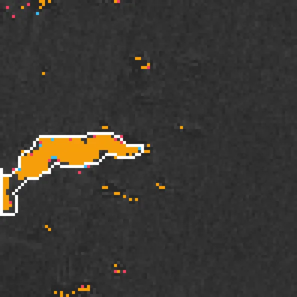
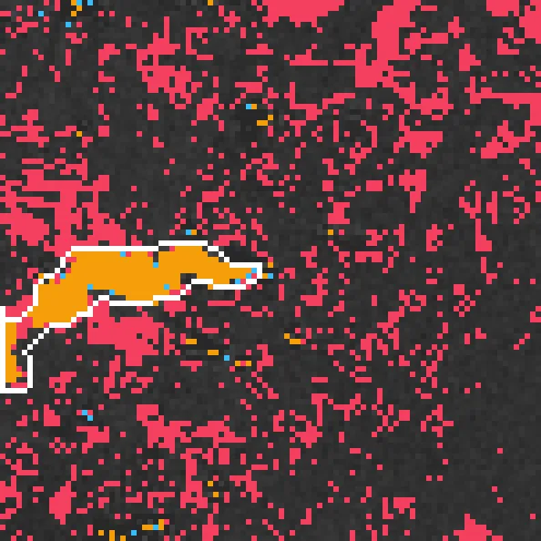
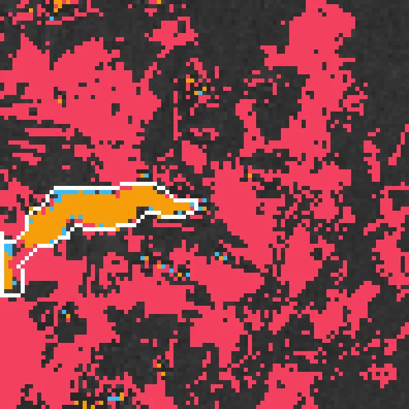
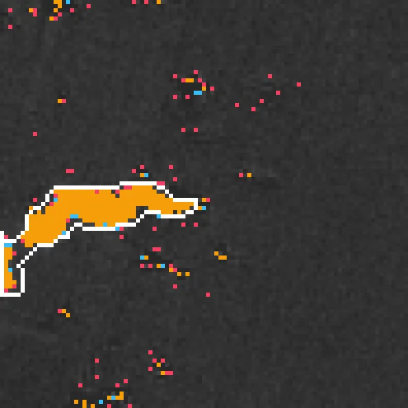
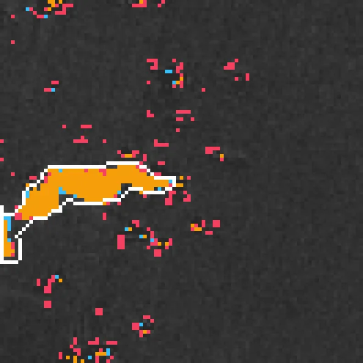
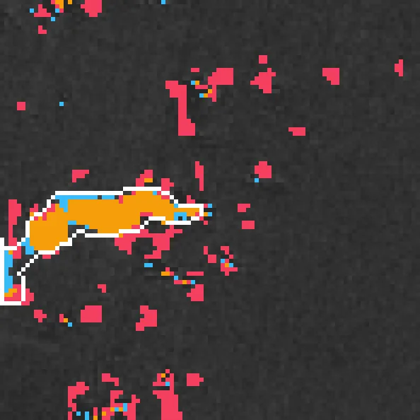

Benchmark / Use cases / Methane plumes / Results / methane-s2-00
methane-s2-00
Compression ratio and delta_iou
Each point is a bound on the root-mean-square error, written next to it in 10⁻⁴ of reflectance, on this sample.
GeoZL PIVCOGeoZL PFORJPEG XL
Decoded detections
The result on the compressed copy at each error bound, in 10⁻⁴ of reflectance.detected on bothlostnew
GeoZL PIVCO
GeoZL PFOR
RMSE ≤ 1 × 10⁻⁴, measured 0.817
2.6× · delta_iou -0.003RMSE ≤ 2 × 10⁻⁴, measured 1.67
3.1× · delta_iou -0.008 RMSE ≤ 4 × 10⁻⁴, measured 3.74
RMSE ≤ 4 × 10⁻⁴, measured 3.74
3.9× · delta_iou -0.012
RMSE ≤ 8 × 10⁻⁴, measured 7.81
4.9× · delta_iou -0.007 RMSE ≤ 16 × 10⁻⁴, measured 15.9
RMSE ≤ 16 × 10⁻⁴, measured 15.9
5.9× · delta_iou -0.128
RMSE ≤ 32 × 10⁻⁴, measured 31.6
6.7× · delta_iou -0.457
RMSE ≤ 64 × 10⁻⁴, measured 61.3
10.3× · delta_iou -0.522 JPEG XL
RMSE ≤ 1 × 10⁻⁴, lossless
2.5× · delta_iou +0.000 RMSE ≤ 2 × 10⁻⁴, lossless
RMSE ≤ 2 × 10⁻⁴, lossless
2.5× · delta_iou +0.000 RMSE ≤ 4 × 10⁻⁴, lossless
RMSE ≤ 4 × 10⁻⁴, lossless
2.5× · delta_iou +0.000RMSE ≤ 8 × 10⁻⁴, measured 3.55
2.9× · delta_iou +0.002
RMSE ≤ 16 × 10⁻⁴, measured 15.9
11.5× · delta_iou -0.057
RMSE ≤ 32 × 10⁻⁴, measured 31.6
21.8× · delta_iou -0.148
RMSE ≤ 64 × 10⁻⁴, measured 63.2
43.9× · delta_iou -0.292